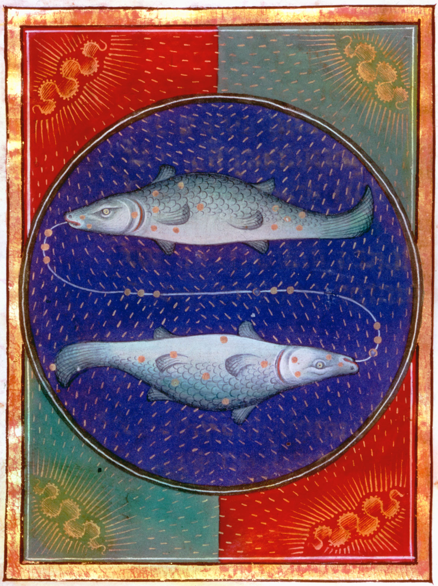

|

|
Pisces, (Latin: “Fishes”) in astronomy, zodiacal
constellation in the northern sky between Aries
and Aquarius, at about 1 hour right ascension
and 15° north declination. The vernal equinox,
the point where the Sun’s annual apparent path
takes it north of the celestial equator and from
which celestial longitude and right ascension are
measured, lies in Pisces. The constellation
contains only faint stars without any striking grouping;
the brightest star, Eta Piscium, has a magnitude of 3.6.
In astrology, Pisces is the 12th sign of the zodiac,
considered as governing the period from about
February 19 to about March 20. Its representation as
two fish tied together is usually related to the Greek
myth of Aphrodite and Eros, who jumped into a river
to escape the monster Typhon and changed into fish,
or, alternatively, the two fish that carried them to safety.
|